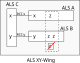
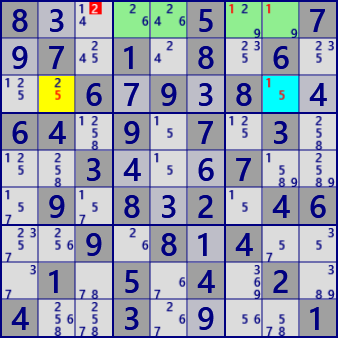
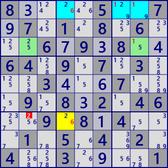
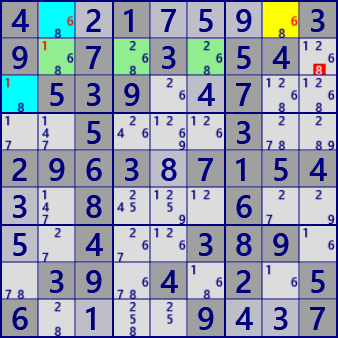
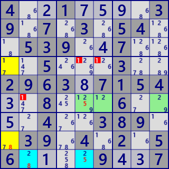

ALS XY-Wing
ALS XY-Wing is an analysis algorithm using threeALS.
It is the case of the next ALS Chain 3ALS.
For ALS A B C, A and C have RCC x and B and C have RCC y. Both A and B have the digit z.
In this state, z can be excluded when z related to all z in A and B is outside ALS.
If z outside ALS is true, ALS A and B becomes LockedSet(x is included in A, y is in B).
In ALS C, the candidate digits of the cell is insufficient.
As a characteristic of the analysis algorithm using ALS,
in many cases, there are many solutions at the same time.
And there are other analysis algorithms of the ALS system.

ALS_XY_Wing Example
8....5..7 .7.1.8.6. ..6.9.8.. 64.9.7.3. ..3...7.. .9.8.2.46 ..9.8.4.. .1.5.4.2. 4..3....1 Puzzle
83...5..7 97.1.8.6. ..67938.4 64.9.7.3. ..34.67.. .9.832.46 ..9.814.. .1.5.4.2. 4..3.9..1 Current

ALS XY-Wing
ALS Stem: r3c8 #15
ALS A: r3c2 #25
ALS B: r1c4578 #12469
RCC Stem-A: #5
RCC Stem-B: #1
Eliminated: r1c3 #2
8....5..7 .7.1.8.6. ..6.9.8.. 64.9.7.3. ..3...7.. .9.8.2.46 ..9.8.4.. .1.5.4.2. 4..3....1 Puzzle
83...5..7 97.1.8.6. ..67938.4 64.9.7.3. ..34.67.. .9.832.46 ..9.814.. .1.5.4.2. 4..3.9..1 Current

ALS XY-Wing
ALS Stem: r1c478 #1269
ALS A: r7c4 #26
ALS B: r3c28 #125
RCC Stem-A: #6
RCC Stem-B: #1
Eliminated: r7c2 #2
4..1....3 9.7.3.54. .539..7.. ..5...3.. 2963.7154 ..8...6.. ..4..389. .39.4.2.5 6....9..7 Puzzle
4.21759.3 9.7.3.54. .539.47.. ..5...3.. 296387154 3.8...6.. 5.4..389. .39.4.2.5 6.1..9437 Current

ALS XY-Wing
ALS Stem: r1c2 r3c1 #168
ALS A: r1c8 #68
ALS B: r2c246 #1268
RCC Stem-A: #6
RCC Stem-B: #1
Eliminated: r2c9 #8
4..1....3 9.7.3.54. .539..7.. ..5...3.. 2963.7154 ..8...6.. ..4..389. .39.4.2.5 6....9..7 Puzzle
4.21759.3 9.7.3.54. .539.47.. ..5...3.. 296387154 3.8...6.. 5.4..389. .39.4.2.5 6.1..9437 Current

ALS XY-Wing
ALS Stem: r9c25 #258
ALS A: r48c1 #178
ALS B: r6c569 #1259
RCC Stem-A: #8
RCC Stem-B: #5
Eliminated: r4c56 r6c2 #1